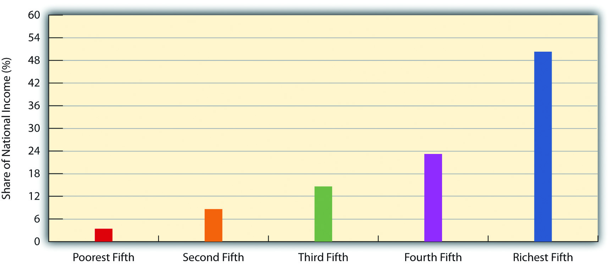
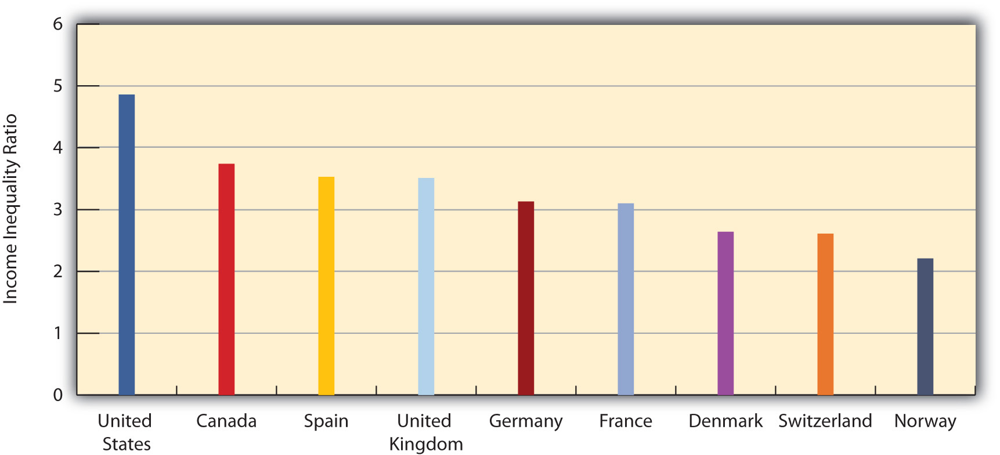
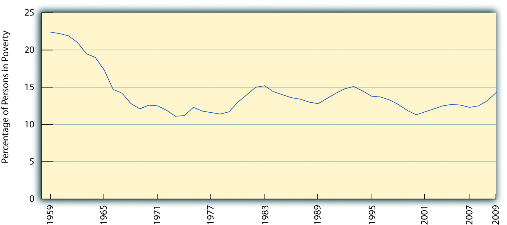
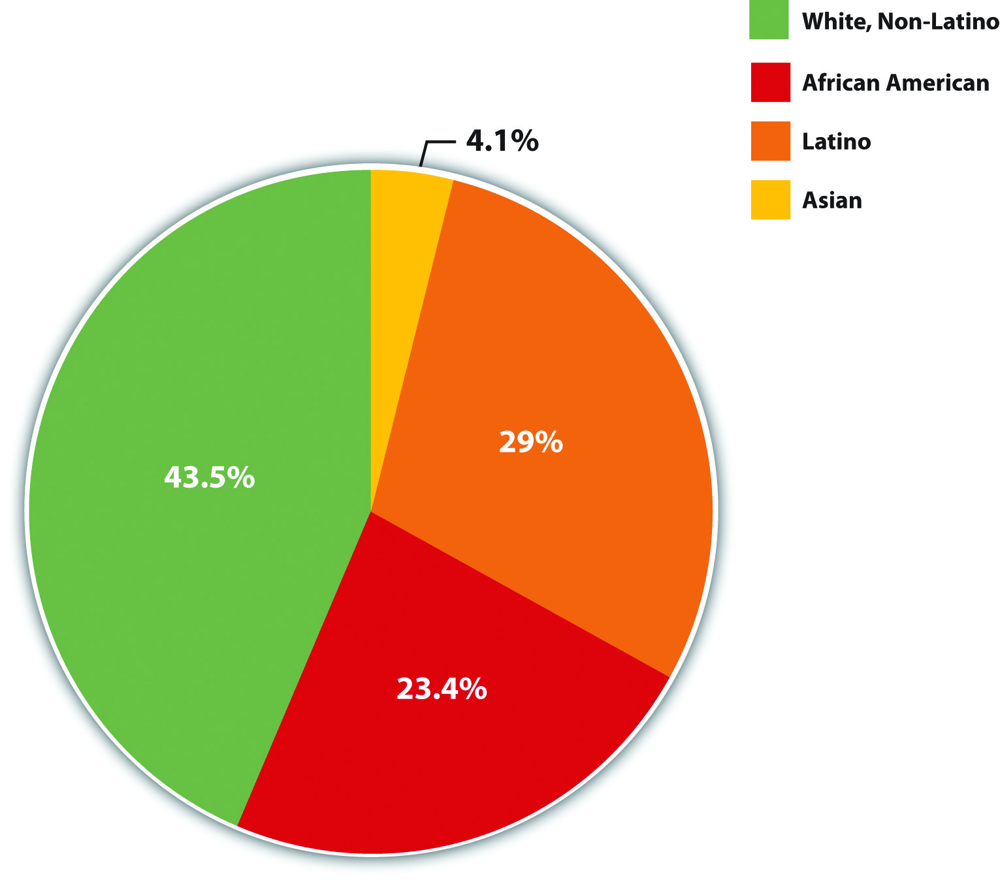
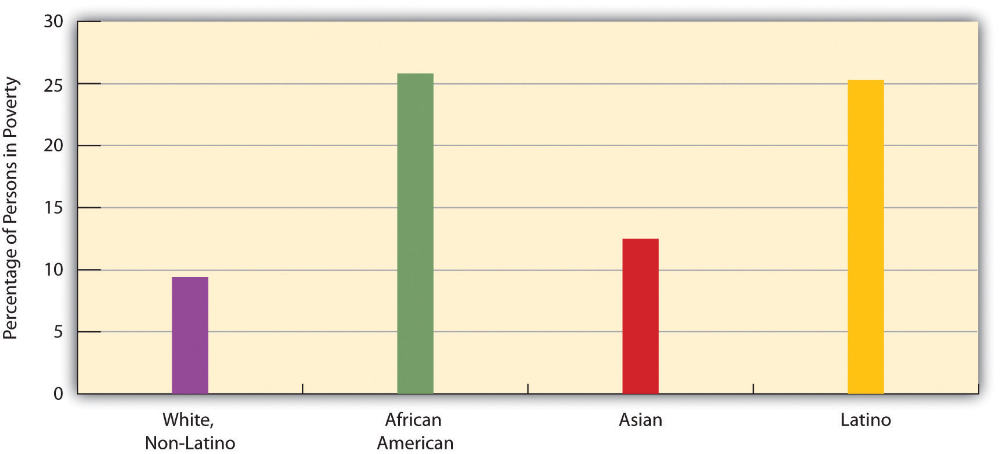

In his classic book The Other America, Michael Harrington (1962)Harrington, M. (1962). The other America: Poverty in the United States. New York, NY: Macmillan. brought the reality of poverty home to many Americans. In chapter after chapter, he discussed the troubled lives of the poor in rural Appalachia, in our urban centers, and in other areas of the country, and he indicted the country for not helping the poor. His book helped kindle interest in the White House and Congress in aiding the poor and deeply affected its thousands of readers. Almost five decades later, we know much more about poverty than we used to. Despite initial gains in fighting poverty in the 1960s (Schwartz, 1984),Schwartz, J. E. (1984, June 18). The war we won: How the great society defeated poverty. The New Republic, 18–19. poverty is still with us and has worsened since the early 2000s, especially since the onset of the serious economic recession that began in 2008. What do we know about the extent of poverty, the reasons for it, and its consequences?
Let’s start by discussing economic inequalityThe extent of the economic difference between the rich and the poor in a society., which refers to the extent of the economic difference between the rich and the poor. Because most societies are stratified, there will always be some people who are richer or poorer than others, but the key question is how much richer or poorer they are. When the gap between them is large, we say that much economic inequality exists; when the gap between them is small, we say that relatively little economic inequality exists.
Considered in this light, the United States has a very large degree of economic inequality. A common way to examine inequality is to rank the nation’s families by income from lowest to highest and then to divide this distribution into fifths. Thus, we have the poorest fifth of the nation’s families (or the 20% of families with the lowest family incomes), a second fifth with somewhat higher incomes, and so on until we reach the richest fifth of families, or the 20% with the highest incomes. We then can see what percentage each fifth has of the nation’s entire income. Figure 8.6 "Share of National Income Going to Income Fifths, 2009" shows such a calculation for the United States. The poorest fifth enjoys only 3.4% of the nation’s income, while the richest fifth enjoys 50.3%. Another way of saying this is that the richest 20% of the population have as much income as the remaining 80% of the population.
Figure 8.6 Share of National Income Going to Income Fifths, 2009
Source: Data from DeNavas-Walt, C., Proctor, B. D., & Smith, J. C. (2010). Income, poverty, and health insurance coverage in the United States: 2009 (Current Population Report P60-238). Washington, DC: U.S. Census Bureau.
This degree of inequality is the largest in the industrialized world. Figure 8.7 "Income Inequality Around the World" compares the inequality among several industrialized nations by dividing the median income of households in the 90th percentile (meaning they have more income than 90% of all households) by the median income of households in the 10th percentile (meaning they have more income than only 10% of all households); the higher the resulting ratio, the greater a nation’s inequality. The ratio for the United States, 4.86, far exceeds that for any other nation.
Figure 8.7 Income Inequality Around the World
Ratio of median income of richest 10% in each nation to that of poorest 10%.
Source: Data from Mishel, L., Bernstein, J., & Shierholz, H. (2009). The state of working America 2008/2009. Ithaca, NY: ILR Press [An imprint of Cornell University Press].
Economic inequality in the United States has increased during the last two decades. The loss of manufacturing jobs and changes in taxation and income distribution policies since the early 1980s have favored the rich and hurt the economic standing of the middle class and the poor (Barlett & Steele, 2002; Wilson, 2009).Barlett, D. L., & Steele, J. B. (2002). The great American tax dodge: How spiraling fraud and avoidance are killing fairness, destroying the income tax, and costing you. Berkeley: University of California Press; Wilson, W. J. (2009). The economic plight of inner-city black males. In E. Anderson (Ed.), Against the wall: Poor, young, black, and male (pp. 55–70). Philadelphia: University of Pennsylvania Press. After adjusting for inflation, the post-tax income of the nation’s wealthiest families grew by a much greater amount than that for the poorest families from 1979 to 2005. It grew by only 6% for the poorest fifth but by 80% for the wealthiest fifth, and it also grew by a whopping 228% for families in the top 1% of the nation’s families (Mishel, Bernstein, & Shierholz, 2009).Mishel, L., Bernstein, J., & Shierholz, H. (2009). The state of working America 2008/2009. Ithaca, NY: ILR Press [An imprint of Cornell University Press]. As the saying goes, the rich get richer. To recall our earlier discussion, to be upwardly mobile, it helps to be well-off to begin with.
When U.S. officials became concerned about poverty during the 1960s, they quickly realized they needed to find out how much poverty we had. To do so, a measure of official poverty, or a poverty lineThe government’s measure of official poverty, based on the cost of a minimal diet for a family multiplied by three., was needed. This line was first calculated in 1963 by multiplying the cost of a very minimal diet by three, as a 1955 government study had determined that the typical American family spent one-third of its income on food. Thus a family whose income is lower than three times the cost of a very minimal diet is considered officially poor.
This way of calculating the poverty line has not changed since 1963, even though many other things, such as energy, child care, and health care, now occupy a greater percentage of the typical family’s budget than was true in 1963. As a national measure, the poverty line also fails to take into account regional differences in the cost of living. For all of these reasons, many experts think the official measurement of poverty is highly suspect. As a recent report observed, “Most poverty analysts strongly believe that the official poverty statistics are inadequate to the task of determining who is poor in America” (Mishel, Bernstein, & Shierholz, 2009, p. 298).Mishel, L., Bernstein, J., & Shierholz, H. (2009). The state of working America 2008/2009. Ithaca, NY: ILR Press [An imprint of Cornell University Press].
The poverty line is adjusted annually for inflation and takes into account the number of people in a family: the larger the family size, the higher the poverty line. In 2009, the poverty line for a nonfarming family of four (two adults, two children) was $21,756. A four-person family earning even one more dollar than $21,756 in 2009 was not officially poor, even though its “extra” income hardly lifted it out of dire economic straits. Policy experts have calculated a no-frills budget that enables a family to meet its basic needs in food, clothing, shelter, and so forth; this budget is about twice the poverty line. Families with incomes between the poverty line and twice the poverty line are barely making ends meet, but they are not considered officially poor. When we talk here about the poverty level, keep in mind that we are talking only about official poverty and that there are many families and individuals living in near-poverty who have trouble meeting their basic needs, especially when they face unusually high medical or motor vehicle expenses or the like. For this reason, some analyses use “twice-poverty” data (i.e., family incomes below twice the poverty line) to provide a more accurate understanding of how many Americans face serious financial difficulties.
With this caveat in mind, how many Americans are poor, and who are they? The U.S. Census Bureau gives us some answers. In 2009, 14.3% of the U.S. population, or almost 44 million Americans, lived in (official) poverty (DeNavas-Walt, Proctor, & Smith, 2010).DeNavas-Walt, C., Proctor, B. D., & Smith, J. C. (2010). Income, poverty, and health insurance coverage in the United States: 2009 (Current Population Report P60-238). Washington, DC: U.S. Census Bureau. This percentage represented a decline from the early 1990s but was higher than the rate in the late 1960s (see Figure 8.8 "U.S. Poverty, 1959–2009"). If we were winning the war on poverty in the 1960s, since then poverty has fought us to a standstill.
Figure 8.8 U.S. Poverty, 1959–2009
Source: Data from U.S. Census Bureau. (2010). Historical poverty tables: People. Retrieved from http://www.census.gov/hhes/www/poverty/data/historical/people.html.
Another way of understanding the extent of poverty is to consider episodic povertyAs defined by the Census Bureau, being poor for at least 2 consecutive months in some time period., defined by the Census Bureau as being poor for at least 2 consecutive months in some time period. From 2004 to 2007, the last years for which data are available, almost one-third of the U.S. public, equal to about 95 million people, were poor for at least 2 consecutive months, although only 2.2% were poor for all 3 years (DeNavas-Walt, Proctor, & Smith, 2010).DeNavas-Walt, C., Proctor, B. D., & Smith, J. C. (2010). Income, poverty, and health insurance coverage in the United States: 2009 (Current Population Report P60-238). Washington, DC: U.S. Census Bureau. As these figures indicate, people go into and out of poverty, but even those who go out of it do not usually move very far from it.
Poverty and Poverty Policy in Other Western Democracies
To compare international poverty rates, scholars commonly use a measure of the percentage of households in a nation that receive less than half of the nation’s median household income after taxes and cash transfers from the government. In 2000, the latest date for which data are available, 17% of U.S. households lived in poverty as defined by this measure (Mishel, Bernstein, & Shierholz, 2009).Mishel, L., Bernstein, J., & Shierholz, H. (2009). The state of working America 2008/2009. Ithaca, NY: ILR Press [An imprint of Cornell University Press]. By comparison, selected other Western democracies had the following rates (Mishel, Bernstein, & Shierholz, 2009, p. 384):Mishel, L., Bernstein, J., & Shierholz, H. (2009). The state of working America 2008/2009. Ithaca, NY: ILR Press [An imprint of Cornell University Press].
| Canada | 11.4% |
| Denmark | 9.2% |
| France | 8.0% |
| Germany | 8.3% |
| Norway | 6.4% |
| Spain | 14.3% |
| Sweden | 6.5% |
| United Kingdom | 12.4% |
The average poverty rate of Western democracies excluding the United States is 9.8%. The U.S. rate is thus 1.73 times greater than this average.
Why is there so much more poverty in the United States than in its Western counterparts? Several differences between the United States and the other nations stand out. First, other Western nations have higher minimum wages and stronger unions than the United States has, and these lead to incomes that help push people above poverty. Second, the other nations spend a much greater proportion of their gross domestic product on social expenditures (income support and social services such as child care subsidies and housing allowances) than does the United States. As a recent analysis concluded,
Other peer countries are much more likely than the United States to step in where markets have failed to live their most disadvantaged citizens out of poverty. This suggests that the relatively low expenditures on social welfare are at least partially implicated in the high poverty rates in the United States. (Mishel, Bernstein, & Shierholz, 2009, p. 387)Mishel, L., Bernstein, J., & Shierholz, H. (2009). The state of working America 2008/2009. Ithaca, NY: ILR Press [An imprint of Cornell University Press].
In short, the United States has so much more poverty than other democracies in part because it spends so much less than they do on helping the poor. The United States certainly has the wealth to follow their example, but it has chosen not to do so, and a high poverty rate is the unfortunate result.
Who are the poor? Contrary to popular images, the most typical poor person in the United States is white: approximately 44% of poor people are white (non-Latino), 29% are Latino, 23% are black, and 4% are Asian (see Figure 8.9 "Racial and Ethnic Composition of the Poor, 2009 (Percentage of Poor Persons in Each Group)"). At the same time, race and ethnicity affect the chances of being poor: while only 9.4% of non-Latino whites are poor, 25.8% of African Americans, 12.5% of Asians, and 25.3% of Latinos (who may be of any race) are poor (see Figure 8.10 "Race, Ethnicity, and Poverty, 2009 (Percentage of Each Group That Is Poor)"). Thus African Americans and Latinos are almost three times as likely as non-Latino whites to be poor. (Because there are so many non-Latino whites in the United States, the plurality of poor people are non-Latino white, even if the percentage of whites who are poor is relatively low.) Chapter 10 "Race and Ethnicity" further discusses the link between poverty and race and ethnicity.
Figure 8.9 Racial and Ethnic Composition of the Poor, 2009 (Percentage of Poor Persons in Each Group)
Source: Data from DeNavas-Walt, C., Proctor, B. D., & Smith, J. C. (2010). Income, poverty, and health insurance coverage in the United States: 2009 (Current Population Report P60-238). Washington, DC: U.S. Census Bureau.
Figure 8.10 Race, Ethnicity, and Poverty, 2009 (Percentage of Each Group That Is Poor)
Source: Data from U.S Census Bureau Current Population Survey. (2008). POV01: Age and sex of all people, family members and unrelated individuals iterated by income-to-poverty ratio and race. Retrieved from http://www.census.gov/hhes/www/macro/032008/pov/new01_100.htm.
Turning to age, almost 21% of children under age 18 are poor (amounting to more than 15 million children), including 35.7% of African American children and 33.1% of Latino children (DeNavas-Walt, Proctor, & Smith, 2010).DeNavas-Walt, C., Proctor, B. D., & Smith, J. C. (2010). Income, poverty, and health insurance coverage in the United States: 2009 (Current Population Report P60-238). Washington, DC: U.S. Census Bureau. The poverty rate for U.S. children is the highest in the Western world and 1.5 to 9 times greater than the corresponding rates in Canada and Western Europe (Mishel, Bernstein, & Shierholz, 2009).Mishel, L., Bernstein, J., & Shierholz, H. (2009). The state of working America 2008/2009. Ithaca, NY: ILR Press [An imprint of Cornell University Press]. At the other end of the age distribution, 8.9% of people aged 65 or older are poor (amounting to about 3.4 million seniors). Turning around these U.S. figures, about 36% of all poor people in the United States are children, and about 8% of the poor are 65 or older. Thus some 44% of Americans living in poverty are children or the elderly.
The type of family structure also makes a difference: whereas only 8.5% of children living with married parents live in poverty, 43% of those living with only their mother live in poverty (2007 data). This latter figure is about 32% for Asian children and for non-Latino white children and rises to slightly more than 50% for African American children and Latino children (Moore, Redd, Burkhauser, Mbawa, & Collins, 2009).Moore, K. A., Redd, Z., Burkhauser, M., Mbawa, K., & Collins, A. (2009). Children in poverty: Trends, consequences, and policy options. Washington, DC: Child Trends. Retrieved from http://www.childtrends.org/Files//Child_Trends-2009_04_07_RB_ChildreninPoverty.pdf As these latter numbers indicate, families headed by a single woman are much more likely to be poor. Poverty thus has a female face.
Explanations of poverty focus on problems either within the poor themselves or in the society in which they live (Iceland, 2006).Iceland, J. (2006). Poverty in America: A handbook. Berkeley: University of California Press. The first type of explanation follows logically from the functional theory of stratification and may be considered an “individual” explanation. The second type of explanation follows from conflict theory and is a structural explanation that focuses on problems in American society that produce poverty. As the “Sociology Making a Difference” box discusses, the explanation of poverty people favor affects how sympathetic they are to the poor.
According to the individual explanation, the poor have personal problems and deficiencies that are responsible for their poverty. In the past, the poor were thought to be biologically inferior, a view that has not entirely faded, but today the much more common belief is that they lack the ambition and motivation to work hard and to achieve. According to the World Values Survey, 60% of Americans believe that people are poor “because they are lazy and lack will power.” This percentage reflects the tendency of Americans to favor individual explanations of poverty (Davidson, 2009).Davidson, T. C. (2009). Attributions for poverty among college students: The impact of service-learning and religiosity. College Student Journal, 43, 136–144.
A more sophisticated version of this type of explanation is called the culture of poverty theory (Banfield, 1974; O. Lewis, 1966).Banfield, E. C. (1974). The unheavenly city revisited. Boston, MA: Little, Brown; Lewis, O. (1966). The culture of poverty. Scientific American, 113, 19–25. According to this theory, the poor generally have beliefs and values that differ from those of the nonpoor and that doom them to continued poverty. For example, they are said to be impulsive and to live for the present rather than the future. Critics say this view exaggerates the degree to which the poor and nonpoor do in fact hold different values and ignores discrimination and other problems in American society (Iceland, 2006).Iceland, J. (2006). Poverty in America: A handbook. Berkeley: University of California Press.
According to the second, structural explanation, U.S. poverty stems from problems in American society that lead to lack of equal opportunity. These problems include (a) racial, ethnic, gender, and age discrimination; (b) lack of good schooling and adequate health care; and (c) structural changes in the American economic system, such as the departure of manufacturing companies from American cities in the 1980s and 1990s (Iceland, 2003).Iceland, J. (2003). Dynamics of economic well-being, 1996–1999 (Current Population Report P70–91). Washington, DC: U.S. Census Bureau. These problems help create a vicious cycle of poverty in which children of the poor are often fated to end up in poverty or near-poverty themselves as adults.
Attributions for Poverty and Public Education Campaigns
The text discusses two general explanations for poverty. The first attributes poverty to lack of willpower and other problems among the poor themselves, while the second attributes poverty to structural obstacles and lack of opportunity in the larger society. As the text notes, Americans tend to favor the first explanation more than the second explanation. They also tend to disagree that the government should do more to help the poor. Could these two sets of views be linked? If so, what would such a link imply for poverty policy?
Sociological research finds that the explanation we favor for poverty—the attribution for poverty we hold—affects whether we want the government to take an active role in helping the poor (Bradley & Cole, 2002).Bradley, C., & Cole, D. J. (2002). Causal attributions and the significance of self-efficacy in predicting solutions to poverty. Sociological Focus, 35, 381–396. People who attribute poverty to problems in the larger society are much more likely than those who attribute it to deficiencies among the poor to believe that the government should take such a role. The attribution for poverty we hold presumably affects the amount of sympathy we have for the poor, and our sympathy, or lack of sympathy, in turn affects our views about the government’s role in helping the poor. As sociologist Theresa C. Davidson (2009)Davidson, T. C. (2009). Attributions for poverty among college students: The impact of service-learning and religiosity. College Student Journal, 43, 136–144. observes, “Beliefs about the causes of poverty shape attitudes toward the poor.”
This body of research strongly suggests that public support for government aid for the poor is weak because so much of the public attributes poverty to failings among the poor themselves. If so, the public might very well begin to endorse greater government aid if its attribution for poverty became more structural instead of individual. Public education campaigns that call attention to the lack of opportunity and other structural problems that account for poverty thus might further poverty policy by beginning to change public perceptions of the poor.
Most sociologists favor the structural explanation. As our earlier Monopoly example illustrates, poverty greatly blocks opportunities for success. Later chapters document racial and ethnic discrimination, lack of adequate schooling and health care, and other problems that make it difficult to rise out of poverty. On the other hand, some ethnographic research supports the individual explanation by showing that the poor do have certain values and follow certain practices that augment their plight (Small, Harding, & Lamont, 2010).Small, M. L., Harding, D. J., & Lamont, M. (2010, May). Reconsidering culture and poverty. The Annals of the American Academy of Political and Social Science, 629, 6–27. For example, the poor have higher rates of cigarette smoking (34% of people with annual incomes between $6,000 and $11,999 smoke, compared to only 13% of those with incomes $90,000 or greater (Goszkowski, 2008),Goszkowski, R. (2008). Among Americans, smoking decreases as income increases. Retrieved from http://www.gallup.com/poll/105550/among-americans-smoking-decreases-income-increases.aspx which helps lead them to have more serious health problems. Adopting an integrated perspective, some researchers say these values and practices are in many ways the result of poverty itself (Small, Harding, & Lamont, 2010).Small, M. L., Harding, D. J., & Lamont, M. (2010, May). Reconsidering culture and poverty. The Annals of the American Academy of Political and Social Science, 629, 6–27. These scholars concede a culture of poverty does exist, but they also say it exists because it helps the poor cope daily with the structural effects of being poor. If these effects lead to a culture of poverty, they add, then poverty becomes self-perpetuating. If poverty is both cultural and structural in origin, these scholars say, a comprehensive national effort must be launched to improve the lives of the people in the “other America.”
However poverty is explained, it has important and enduring effects, which later chapters will continue to discuss. For now, we can list some of the major consequences of poverty (and near-poverty) in the United States. As we do so, recall the sociological perspective’s emphasis on how our social backgrounds influence our attitudes, behaviors, and life chances. This influence on life chances is quite evident when we look at some of the effects of poverty (Moore, Redd, Burkhauser, Mbawa, & Collins, 2009; Iceland, 2006; D. Lindsey, 2009):Moore, K. A., Redd, Z., Burkhauser, M., Mbawa, K., & Collins, A. (2009). Children in poverty: Trends, consequences, and policy options. Washington, DC: Child Trends. Retrieved from http://www.childtrends.org/Files//Child_Trends-2009_04_07_RB_ChildreninPoverty.pdf; Iceland, J. (2006). Poverty in America: A handbook. Berkeley: University of California Press; Lindsey, D. (2009). Child poverty and inequality: Securing a better future for America’s children. New York, NY: Oxford University Press.
It is easy to understand why the families in Wichita, Kansas, discussed in the news story that began this chapter might be poor in the middle of a deep economic recession. Yet a sociological understanding of poverty emphasizes its structural basis in bad times and good times alike. Poverty is rooted in social and economic problems of the larger society rather than in the lack of willpower, laziness, or other moral failings of poor individuals themselves. Individuals born into poverty suffer from a lack of opportunity from their first months up through adulthood, and poverty becomes a self-perpetuating, vicious cycle. To the extent a culture of poverty might exist, it is best seen as a logical and perhaps even inevitable outcome of, and adaptation to, the problem of being poor and not the primary force driving poverty itself.
This sort of understanding suggests that efforts to reduce poverty must address first and foremost the structural basis for poverty while not ignoring certain beliefs and practices of the poor that also make a difference. An extensive literature on poverty policy outlines many types of policies and strategies that follow this dual approach (Moore, Redd, Burkhauser, Mbawa, & Collins, 2009; Iceland, 2006; D. Lindsey, 2009; Cancian & Danziger, 2009; Turner & Rawlings, 2005).Moore, K. A., Redd, Z., Burkhauser, M., Mbawa, K., & Collins, A. (2009). Children in poverty: Trends, consequences, and policy options. Washington, DC: Child Trends. Retrieved from http://www.childtrends.org/Files//Child_Trends-2009_04_07_RB_ChildreninPoverty.pdf; Iceland, J. (2006). Poverty in America: A handbook. Berkeley: University of California Press; Lindsey, D. (2009). Child poverty and inequality: Securing a better future for America’s children. New York, NY: Oxford University Press; Cancian, M., & Danziger, S. (2009). Changing poverty and changing antipoverty policies. Ann Arbor: National Poverty Center, University of Michigan; Turner, M. A., & Rawlings, L. A. (2005). Overcoming concentrated poverty and isolation: Ten lessons for policy and practice. Washington, DC: The Urban Institute. If these were fully adopted, funded, and implemented, they would offer great promise for reducing poverty. As two poverty experts recently wrote, “We are optimistic that poverty can be reduced significantly in the long term if the public and policymakers can muster the political will to pursue a range of promising antipoverty policies” (Cancian & Danziger, 2009, p. 32).Cancian, M., & Danziger, S. (2009). Changing poverty and changing antipoverty policies. Ann Arbor: National Poverty Center, University of Michigan. Although a full discussion of these policies is beyond the scope of this chapter, the following measures are commonly cited as holding strong potential for reducing poverty: